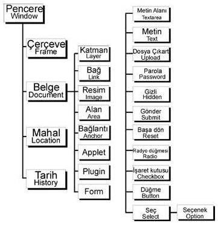

Nesneler
Javascript ile yazılan programlar, browser programlarının belge nesne modeli denen kurallar içinde hareket etmek zorundadır.Javascripti, browserın sunduğu hiyerarşik nesne modeli ile sınırlıdır. Aşağıda Netscape’in belge nesne modeli verilmiştir.Internet Explorer çok daha fazla nesneyi kontrol etmenize imkan verir; fakat derslerimizde her browserda algılanacak örneklere yer verdiğimiz için bu nesne modeli verilmiştir.
|  |
Önceki derslerimizde ekrana bir yazı yazdırmak istediğimizde bunu document.write komutu ile yapmıştık.Bu işlemde şöyle bir mantık vardır.Biz, pencerenin içindeyiz, hitap edeceğimiz nesne ise döküman, öyleyse yazmaya hitap edeceğimiz nesnenin bulunduğu kademeden başlamalıyız.
Nesnelerin kullanım mantığında aşamalılık vardır.Bulunduğun düzeyden başlarak, hitap edeceğin nesne düzeyine kadar belirtilmesi gerekir.Daha önceki derslerimizden hatırlayacağınız gibi, herhangi bir form aracıyla işlem yapacağımızda form.araççubuğunun_adi.value demiştik.Aslında biz pencerenin içinde bulunduğumuz için yazmaya döküman nesnesinden başlamalıyız.document.form.araççubuğunun_adi.value şeklinde tanımlanmalı; fakat javascript kurallar yönünden esnek bir dil olmamasına rağmen, bu kullanımda bie seneklik sağlamıştır.
Şemadaki nesnelerin html karşılıkları :
| Nesneler | Html Karşılıkları |
| Pencere (Window) | Yok |
| Çerçeve (Frame) | <frame> |
| Belge (Document) | <body> |
| Form | <form> |
| Düğme(button) | <input type="button"> |
| İşaret Kutusu | <input type="checkbox"> |
| Gizli (Hidden) | <input type="hidden"> |
| Dosya Çıkart | <input type="file"> |
| Parola (password) | <input type="password"> |
| Radyo düğmesi (Radio) | <input type="radio"> |
| Başa dön (Reset) | <input type="reset"> |
| Seç (Select) | <select> |
| Gönder (Submit) | <input type="submit"> |
| Metin (Text) | <input type="text"> |
| Metin Alanı (Textarea) | <textarea> |
| Bağ (Link) | <a href="xxx" > |
| Bağlantı (Anchor) | <a name="xxx"> |
| Resim (Image) | <img src="xxx"> |
| Plugin <embed> | <embed rsc="xxx"> |
| Alan (Area) | <map> |
| Applet | <applet> |
Pencere nesnesi ile ayrıntılı bilgi sonraki derslerimizde verilecektir.Burada kısaca, pencere nesnesine ait html etiketi olmamasına karşın, bu nesnelerin değişik tanımlamalar ile kullanıldığı gösterildi.Pencere nesnesine atıfta bulanabilmek için, window.open işlemi bir değişkene atandı.Daha sonra bu değişken ismi kullanılarak yeni açılan pencereye yazı yazıldı.
Pencere açma işleminin window.open() ile yapıldığını gördük.Penceryi kapatmak için ise window.close() kullanılır.İsterseniz window.status = "........." ile penceresinin alt çervesindeki durum alanına yazı da yazdırabilirsiniz.